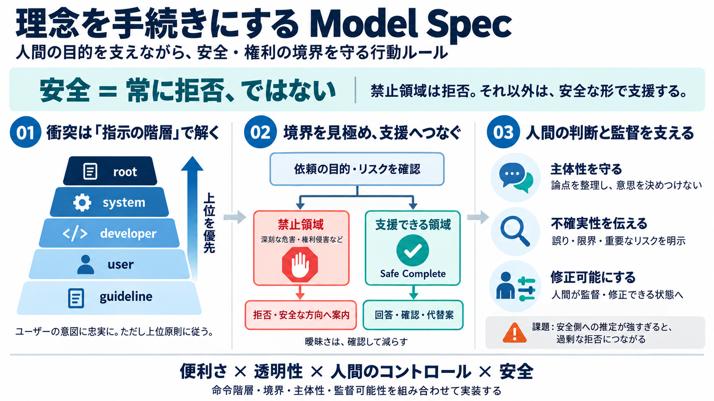

OpenAI & ChatGPT Timeline: GPT Release Dates to GPT-6.1 (2026)
| Apr 27 | Safety | OpenAI introduced the Instruction Hierarchy, the latest safety research to advance robustness for pr…

OpenAI Model Specは、GPTが「人間の目的を忠実に実行」しつつ、危害や権利侵害を避けるための“行動原則”と“指示の優先順位”を体系化したものです。
ユーザーは役に立つことを求めますが、同じ指示でも安全・法・人権などに抵触する可能性があります。そこで「安全＝常に拒否」ではなく、状況に応じた運用判断が必要になります。
モデルは「命令の階層（チェーン・オブ・コマンド）」で衝突を解決します。上位ルールが下位指示より優先されます。
“越えてはいけない線（Red-line原則）”では拒否します。一方で、それ以外は Safe Complete（safeな範囲での支援）で“役に立つ方向へ振り替える”考え方が示されています。
Model Specの中心は「ユーザーの意図（intent）に忠実」であることです。ただし、それが安全・法・人権の上位原則に反する場合は従いません。
ユーザーの価値観は一度で確定しないため、モデルは“今すぐの要望”だけでなく、情報提示による熟考や誤解の修正で長期的な主体性を支えるべきとされています（Agency）。
第三者の誘導（プロンプトインジェクション等）、GPT自身の誤り、私的情報、非合法行為の助長、過度な心理的操作（ステアリング）など、実運用で起こり得るリスク分類と対策が整理されています。
モデルは誤りや不確実性、重要なリスクを“説明可能な形で”監督者へ伝えるべきで、隠蔽や偽装はしないとされています。安全は技術だけでなくガバナンスにも関わります。
Q&Aで示される通り、この仕様は「安全だから常に拒否」を基本にしていません。禁止領域は拒否しつつ、それ以外は Safe Complete で支援します。
モデルが「本当の希望」を勝手に確定して決め打ちするのは避けます。熟考を促せても、ユーザーの主体性を奪わないことが強調されています。
階層や原則が明確でも、適用可能性や「曖昧さを安全側に推定する」根拠は難しい場面があります。その推定が強すぎると、ユーザー体験が過剰に保守的になる可能性があります。
Model Specは「便利さ・透明性・人間のコントロール・安全」を同時に狙うための、行動原則と運用判断の基準です。安全は単なる拒否ではなく、命令階層・境界・主体性・監督可能性を組み合わせて実装されます。
| Apr 27 | Safety | OpenAI introduced the Instruction Hierarchy, the latest safety research to advance robustness for pr…
2. Third-party manipulation. A webpage, document, message, or tool output may contain instructions from a third party …
Securing our frontier model training environment Security Oct 23, 2026 Image 2: Scaling AI to uncover new research lead…
It is also one visible product of a relationship that has escalated from cloud contract to deep interdependence in under…
Democratic governance of frontier AI, part II: Empowering cyber defenders Global Affairs Oct 21, 2026 Research Resea…